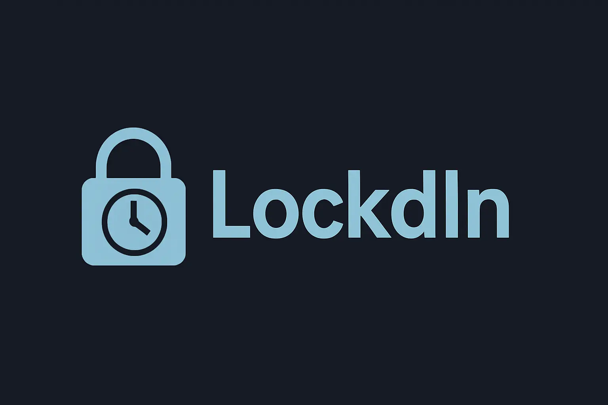

|
Memori
A shared photo album and micro-journaling app that helps users preserve everyday moments with friends. Each user can post photos or notes that appear in a shared calendar view. Built using React Native with smooth navigation, profile pages, and a minimal grid-style gallery. |

|
FoodFlip
A swipe-based restaurant discovery app where users flip cards to view restaurant details. The front displays name, cuisine, and price range, while the back reveals address, hours, and top dishes. The product displays recommended restaurants based on a user's liked restaurants, and users can also view all their liked restaurants in one place. |
|  |
LockdIn
A group productivity app that helps students stay focused through collaborative study sessions. Groups set timers, block distracting apps, and deposit money into a shared fund using the Stripe API. Features a ranking system, challenge mode, and clean group creation flow powered by Express.js and Supabase. |